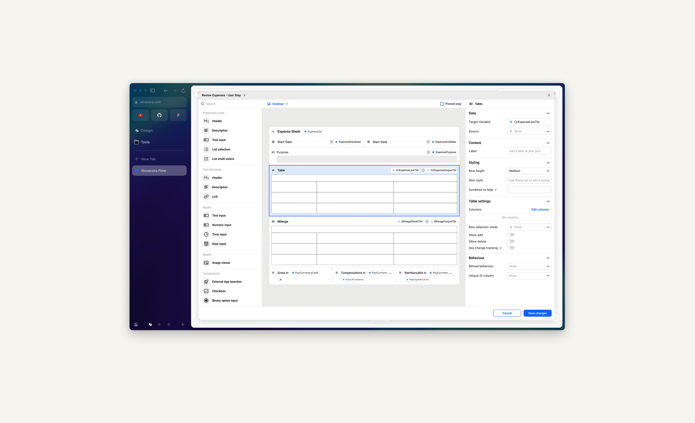
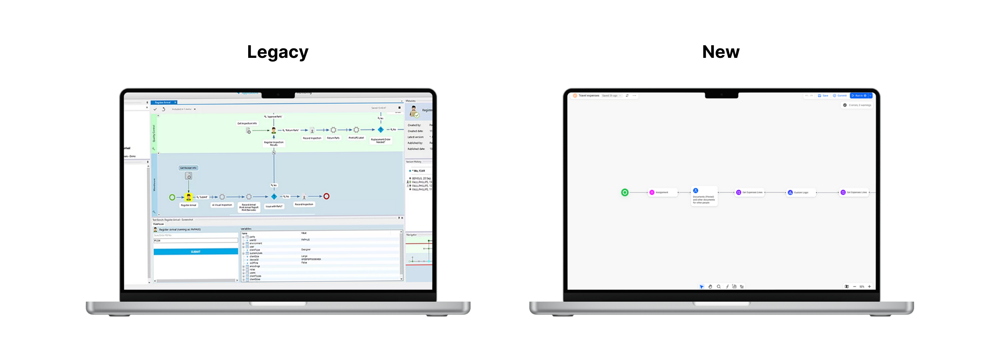

ERP App Designer
Redesigning the entire app development experience for Novacura Flow Connect — taking a decade-old Windows tool to a modern, fully web-based platform without losing the users who depend on it every day.

The Challenge
Our company was moving from Novacura Flow Classic (a Windows-based low-code ERP platform from the late 2000s) to Novacura Flow Connect, a fully web-based version.
My challenge was to redesign the entire app designer for the web while ensuring our existing user base could transition seamlessly.
The balance we needed to strike: keep it familiar enough that users wouldn't resist the change, but improve on as many aspects as possible (speed of development, navigation, usability, clarity) and fix known pain points users have had for years.
Novacura was moving from their old Windows app to Flow Connect, a new web-based platform. How do we get existing customers to actually want to make the switch to the new app designer? And how do we improve the overall experience to what they had before?
The response to the new Web Designer was overwhelmingly positive, both from users and stakeholders. 85% said they preferred it to the legacy version. And 3 major customers who'd been hesitant about switching to Flow Connect got genuinely excited about what they saw, and started moving faster on their migration plans.
Key Constraints
This wasn't a blank-canvas redesign. Several real-world constraints shaped every decision we made.
Feature parity first
Feature parity with the legacy product had to come before any major innovations.
Small team, big scope
A small team with limited development resources meant ruthless prioritisation at every turn.
Org-wide opinions
Managing strong feedback and differing opinions from across the organisation on every detail.
A decade of dependency
The pressure of modernising a product users had relied on for over ten years — without losing them.

Sole Designer on the Team
As the sole designer on the team, I led the design strategy, vision, and quality assurance throughout the project. I worked most closely with the Product Manager and Architect to align on strategy and bring solutions to life, then collaborated tightly with frontend developers to ensure implementation matched the intended design quality.
Beyond delivery, this also meant being the voice of the user in every conversation — advocating for the right decisions even when constraints pushed back hard.
A Three-Phase Research Approach
Given the scale of the project, we invested heavily in research before, during, and after development. Each phase served a distinct purpose and shaped the product in a different way.
Exploratory User Interviews
As a first step, I conducted a series of interviews with 5 users to understand the overall experience of the legacy product and identify specific pain points to tackle. These interviews served as an anchor for early decision making, giving the team a clearer direction from day one.
Feature-Specific Usability Testing
Throughout the design process we ran moderated usability sessions for the most critical features — at least 4 users per session. This gave us enough signal to catch issues before they reached production and helped us prioritise the most impactful pain points as we iterated.
Full Product Usability Testing
Before the beta ended, we ran 5 moderated sessions to catch any major issues before release. We observed new users navigating the designer for the first time and tasked them with familiar flows from the legacy product. Beta testers with early access also provided invaluable feedback in the final stretch.
Three Decisions That Defined the Product
Canvas-first layout with floating elements
We made the canvas the undisputed focus of the product — toolbar, app configuration, and actions all became floating elements that don't compete for attention. We also introduced the ability to open multiple windows simultaneously, letting users compare apps, share work, and move faster.
This reflected how developers actually work. They need to see their creation clearly and often reference multiple apps at once. The legacy product forced single-window workflows that consistently slowed people down.
Radical transparency for changes and errors
One of the biggest issues with the legacy product was that critical information was hidden or appeared at the wrong moment. We made a strategic decision to surface everything — changes, errors, available tools — at exactly the right time. For example, when committing changes, users now see a full summary of everything that's changed since their last commit.
Users told us they felt the product was finally "taking them seriously." This transparency shifted the entire experience from feeling opaque and unpredictable to clear and trustworthy — a strategic win for long-term retention.
Maintaining familiarity while fixing fundamental issues
Rather than reinventing everything, I identified which mental models users already had and preserved those deliberately — while aggressively fixing the friction points underneath. Users were initially "on the fence" about the new designer, but after using it in beta, overwhelmingly preferred it and couldn't go back to the legacy version.
A product redesign that feels entirely foreign will face adoption resistance no matter how good it is. By anchoring users in familiar patterns, we lowered the psychological barrier to switching — then let the improvements speak for themselves.
Impact & Results
While the product hasn't fully launched yet, the beta has already delivered significant value — both commercially and in terms of user trust.
Customers accelerated migration
Several major customers who had been hesitant about switching to Flow Connect got genuinely excited after seeing the new designer and moved faster on their migration plans — a direct commercial outcome.
100% of beta users preferred the new designer
Every beta user who tried the new designer preferred it over the legacy product. Many said they couldn't go back.
"They're finally taking us seriously"
Users specifically called out feeling that the product had been built with them in mind — a strategic win for trust and long-term retention.
What I Learned
The challenge of "invisible" features
During research, I discovered that some features — like saving — are nearly invisible to users because they work automatically. This made it difficult to understand mental models through traditional interview questions. I had to get creative, asking around the feature rather than about it, to understand how people would react to different solutions.
What could be better
While the designer itself is strong, some interconnections between it and other parts of the product still need work to deliver a holistic experience across the entire platform. This is something I'd prioritise much earlier in future projects — end-to-end thinking from day one, not just within the scope of a single feature area.
Personal growth
Leading a project of this scale pushed me significantly. It taught me to hold a clear vision while navigating constant input from across the organisation, to balance innovation with familiarity, and ultimately to ship something users genuinely love — which is always the goal.